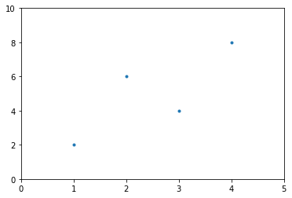
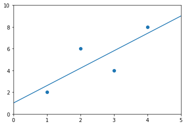

Statistical Modeling with Python¶
statsmodels is better suited for traditional stats
# the statsmodels.api uses numpy array notation
# statsmodels.formula.api use formula notation (similar to R's formula notation)
import numpy as np
import pandas as pd
import matplotlib.pyplot as plt
import seaborn as sns
import statsmodels.api as sm
import statsmodels.formula.api as smf
A minimal OLS example¶
Four pairs of points
x = np.array([1,2,3,4])
y = np.array([2,6,4,8])
plt.scatter(x,y, marker = '.')
plt.xlim(0,5)
plt.ylim(0,10)
plt.show()

# make a dataframe of our data
d = pd.DataFrame({'x':x, 'y':y})
print(d)
x y
0 1 2
1 2 6
2 3 4
3 4 8
Seaborn lmplot
sns.lmplot(x = 'x', y = 'y', data = d)
<seaborn.axisgrid.FacetGrid at 0x17581f122e8>
Formula notation with statsmodels¶
use statsmodels.formula.api (often imported as smf)
# data is in a dataframe
model = smf.ols('y ~ x', data = d)
# estimation of coefficients is not done until you call fit() on the model
results = model.fit()
print(results.summary())
OLS Regression Results
==============================================================================
Dep. Variable: y R-squared: 0.640
Model: OLS Adj. R-squared: 0.460
Method: Least Squares F-statistic: 3.556
Date: Fri, 09 Nov 2018 Prob (F-statistic): 0.200
Time: 15:32:30 Log-Likelihood: -6.8513
No. Observations: 4 AIC: 17.70
Df Residuals: 2 BIC: 16.48
Df Model: 1
Covariance Type: nonrobust
==============================================================================
coef std err t P>|t| [0.025 0.975]
------------------------------------------------------------------------------
Intercept 1.0000 2.324 0.430 0.709 -8.998 10.998
x 1.6000 0.849 1.886 0.200 -2.051 5.251
==============================================================================
Omnibus: nan Durbin-Watson: 3.400
Prob(Omnibus): nan Jarque-Bera (JB): 0.308
Skew: -0.000 Prob(JB): 0.857
Kurtosis: 1.640 Cond. No. 7.47
==============================================================================
Warnings:
[1] Standard Errors assume that the covariance matrix of the errors is correctly specified.
C:\Users\miles\Anaconda3\lib\site-packages\statsmodels\stats\stattools.py:72: ValueWarning: omni_normtest is not valid with less than 8 observations; 4 samples were given.
"samples were given." % int(n), ValueWarning)
Using the abline_plot function for plotting the results
sm.graphics.abline_plot(model_results = results)
plt.scatter(d.x, d.y)
plt.xlim(0,5)
plt.ylim(0,10)
plt.show()

Generating an anova table
print(sm.stats.anova_lm(results))
df sum_sq mean_sq F PR(>F)
x 1.0 12.8 12.8 3.555556 0.2
Residual 2.0 7.2 3.6 NaN NaN
Making predictions
results.predict({'x' : 2})
0 4.2
dtype: float64
numpy array notation¶
similar to sklearn’s notation
print(x)
[1 2 3 4]
X = sm.add_constant(x)
# need to add a constant for the intercept term.
# because we are using the numpy notation, we use sm rather than smf
print(X)
[[1. 1.]
[1. 2.]
[1. 3.]
[1. 4.]]
\[y_i = \beta_0 + \beta_1 x_i + \epsilon_i\]
\[\mathbf{\hat{Y}} = \boldsymbol{\beta} \mathbf{X}\]
# OLS is capitalized in the numpy notation
model2 = sm.OLS(y, X)
results2 = model2.fit()
print(results2.summary())
OLS Regression Results
==============================================================================
Dep. Variable: y R-squared: 0.640
Model: OLS Adj. R-squared: 0.460
Method: Least Squares F-statistic: 3.556
Date: Fri, 09 Nov 2018 Prob (F-statistic): 0.200
Time: 15:41:47 Log-Likelihood: -6.8513
No. Observations: 4 AIC: 17.70
Df Residuals: 2 BIC: 16.48
Df Model: 1
Covariance Type: nonrobust
==============================================================================
coef std err t P>|t| [0.025 0.975]
------------------------------------------------------------------------------
const 1.0000 2.324 0.430 0.709 -8.998 10.998
x1 1.6000 0.849 1.886 0.200 -2.051 5.251
==============================================================================
Omnibus: nan Durbin-Watson: 3.400
Prob(Omnibus): nan Jarque-Bera (JB): 0.308
Skew: -0.000 Prob(JB): 0.857
Kurtosis: 1.640 Cond. No. 7.47
==============================================================================
Warnings:
[1] Standard Errors assume that the covariance matrix of the errors is correctly specified.
C:\Users\miles\Anaconda3\lib\site-packages\statsmodels\stats\stattools.py:72: ValueWarning: omni_normtest is not valid with less than 8 observations; 4 samples were given.
"samples were given." % int(n), ValueWarning)
OLS solution¶
\[(X^TX)^{-1}X^TY\]
X
array([[1., 1.],
[1., 2.],
[1., 3.],
[1., 4.]])
np.linalg.inv(X.T @ X) @ (X.T @ y)
array([1. , 1.6])